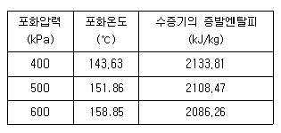
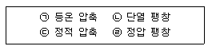
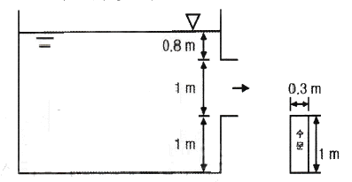
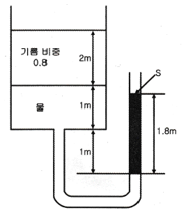
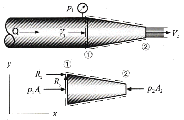
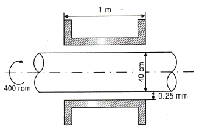
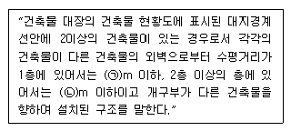
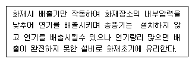

소방설비기사(기계분야) (2016-05-08 기출문제)
1과목: 소방원론
1. 스테판-볼쯔만의 법칙에 의해 복사열과 절대온도와의 관계를 옳게 설명한 것은?
- 복사열은 절대온도의 제곱에 비례한다.
- 복사열은 절대온도의 4제곱에 비례한다.
- 복사열은 절대온도의 제곱에 반비례한다.
- 복사열은 절대온도의 4제곱에 반비례한다.
(정답률: 72%)

2. 물을 사용하여 소화가 가능한 물질은?
- 트리메틸알루미늄
- 나트륨
- 칼륨
- 적린
(정답률: 68%)
3. 화씨 95도를 켈빈(Kelvin)온도로 나타내면 약 몇 K 인가?
- 178
- 252
- 308
- 368
(정답률: 62%)
4. 알킬알루미늄 화재에 적합한 소화약제는?
- 물
- 이산화탄소
- 팽창질석
- 할로겐화합물
(정답률: 77%)
5. 제1종 분말 소화약제의 열분해 반응식으로 옳은 것은?
- 2NaHCO3 → Na2CO3 + CO2 +H2O
- 2KHCO3 → K2CO3 + CO2 +H2O
- 2NaHCO3 → Na2CO3 + 2CO2 +H2O
- 2KHCO3 → K2CO3 + 2CO2 +H2O
(정답률: 63%)
6. 폭굉(Detonation)에 관한 설명으로 틀린 것은?
- 연소속도가 음속보다 느릴 때 나타난다.
- 온도의 상승은 충격파의 압력에 기인한다.
- 압력상승은 폭연의 경우보다 크다.
- 폭굉의 유도거리는 배관의 지름과 관계가 있다.
(정답률: 74%)
7. 화재의 종류에 따른 표시 색 연결이 틀린 것은?
- 일반화재 - 백색
- 전기화재 - 청색
- 금속화재 - 흑색
- 유류화재 - 황색
(정답률: 77%)
8. 화재 및 폭발에 관한 설명으로 틀린 것은?
- 메탄가스는 공기보다 무거우므로 가스탐지부는 가스기구의 직하부에 설치한다.
- 옥외저장탱크의 방유제는 화재 시 화재의 확대를 방지하기 위한 것이다.
- 가연성 분진이 공기 중에 부유하면 폭발할 수도 있다.
- 마그네슘의 화재 시 주수 소화는 화재를 확대할 수 있다.
(정답률: 74%)
9. 굴뚝효과에 관한 설명으로 틀린 것은?
- 건물내ㆍ외부의 온도차에 따른 공기의 흐름 현상이다.
- 굴뚝효과는 고층건물에서는 잘 나타나지 않고 저층건물에서 주로 나타난다.
- 평상시 건물 내의 기류분포를 지배하는 중요요소이며 화재 시 연기의 이동에 큰 영향을 미친다.
- 건물외부의 온도가 내부의 온도보다 높은 경우 저층부에서는 내부에서 외부로 공기의 흐름이 생긴다.
(정답률: 77%)
10. 위험물안전관리법상 위험물의 지정수량이 틀린 것은?
- 과산화나트륨 - 50 kg
- 적린 - 100 kg
- 트리니트로톨루엔 - 200 kg
- 탄화알루미늄 - 400 kg
(정답률: 59%)
11. 연쇄반응을 차단하여 소화하는 약제는?
- 물
- 포
- 할론 1301
- 이산화탄소
(정답률: 74%)
12. 화재 발생 시 인간의 피난 특성으로 틀린 것은?
- 본능적으로 평상시 사용하는 출입구를 사용한다.
- 최초로 행동을 개시한 사람을 따라서 움직인다.
- 공포감으로 인해서 빛을 피하여 어두운 곳으로 몸을 숨긴다.
- 무의식 중에 발화 장소의 반대쪽으로 이동한다.
(정답률: 78%)
13. 에스테르가 알칼리의 작용으로 가수분해 되어 알코올과 산의 알칼리염이 생성되는 반응은?
- 수소화 분해반응
- 탄화 반응
- 비누화 반응
- 할로겐화 반응
(정답률: 70%)
14. 위험물에 관한 설명으로 틀린 것은?
- 유기금속화합물인 사에틸납은 물로 소화할 수 없다.
- 황린은 자연발화를 막기 위해 통상 물속에 저장한다.
- 칼륨, 나트륨은 등유 속에 보관한다.
- 유황은 자연발화를 일으킬 가능성이 없다.
(정답률: 44%)
15. 블레비(BLEVE) 현상과 관계가 없는 것은?
- 핵분열
- 가연성액체
- 화구(Fire ball)의 형성
- 복사열의 대량 방출
(정답률: 69%)
16. 소화기구는 바닥으로부터 높이 몇 m 이하의 곳에 비치하여야 하는가? (단, 자동소화장치를 제외한다.)
- 0.5
- 1.0
- 1.5
- 2.0
(정답률: 62%)
17. 제4류 위험물의 화재 시 사용되는 주된 소화방법은?
- 물을 뿌려 냉각한다.
- 연소물을 제거한다.
- 포를 사용하여 질식 소화한다.
- 인화점 이하로 냉각한다.
(정답률: 69%)
18. 증발잠열을 이용하여 가연물의 온도를 떨어뜨려 화재를 진압하는 소화방법은?
- 제거소화
- 억제소화
- 질식소화
- 냉각소화
(정답률: 75%)
19. 분말소화약제 중 담홍색 또는 황색으로 착색하여 사용하는 것은?
- 탄산수소나트륨
- 탄산수소칼륨
- 제1인산암모늄
- 탄산수소칼륨과 요소와의 반응물
(정답률: 70%)
20. 건축물의 내화구조 바닥이 철근콘크리조 또는 철골천근콘크리트조인 경우 두께가 몇 cm 이상이어야 하는가?
- 4
- 5
- 7
- 10
(정답률: 70%)
2과목: 소방유체역학
21. 배연설비의 배관을 흐르는 공기의 유속을 피토정압관으로 측정할 때 정압단과 정체압단에 연결된 U자관의 수은 기둥 높이차가 0.03m 이었다. 이 때 공기의 속도는 약 몇 m/s 인가? (단, 공기의 비중은 0.00122, 수은의 비중 13.6이다.)
- 81
- 86
- 91
- 96
(정답률: 42%)
22. 펌프 입구의 진공계 및 출구의 압력계 지침이 흔들리고 송출유량도 주기적으로 변화하는 이상 현상은?
- 공동현상(cavitation)
- 수격작용(water hammering)
- 맥동현상(surging)
- 언밸런스(unbalance)
(정답률: 68%)
23. 동일한 성능의 두 펌프를 직렬 또는 병렬로 연결하는 경우의 주된 목적은?
- 직렬 : 유량 증가, 병렬 : 양정 증가
- 직렬 : 유량 증가, 병렬 : 유량 증가
- 직렬 : 양정 증가, 병렬 : 유량 증가
- 직렬 : 양정 증가, 병렬 : 양정 증가
(정답률: 70%)
24. 액체가 일정한 유량으로 파이프를 흐를 때 유체속도에 대한 설명으로 틀린 것은?
- 관 지름에 반비례한다.
- 관 단면적에 반비례한다.
- 관 지름의 제곱에 반비례한다.
- 관 반지름의 제곱에 반비례한다.
(정답률: 47%)
25. 매끈한 원관을 통과하는 난류의 관마찰계수에 영향을 미치지 않는 변수는?
- 길이
- 속도
- 직경
- 밀도
(정답률: 47%)
26. 온도 20℃의 물을 계기압력이 400kPa인 보일러에 공급하여 포화수증기 1kg을 만들고자 한다. 주어진 표를 이용하여 필요한 열량을 구하면? (단, 대기압은 100kPa, 액체상태 물의 평균비열은 4.18 kJ/kgK이다.)

- 2640
- 2651
- 2660
- 2667
(정답률: 37%)
27. 구조가 상사한 2대의 펌프에서, 유동상태가 상사할 경우 2대의 펌프 사이에 성립하는 상사법칙이 아닌 것은? (단, 비압축성유체인 경우이다.)
- 유량에 관한 상사법칙
- 전양정에 관한 상사법칙
- 축동력에 관한 상사법칙
- 밀도에 관한 상사법칙
(정답률: 63%)
28. 질량 4kg의 어떤 기체로 구성된 밀폐계가 열을 받아 100kJ의 일을 하고, 이 기체의 온도가 10℃상승하였다면 이 계가 받은 열은 몇 kJ인가? (단, 이 기체의 정적비열은 5kJ/kgㆍK, 정압비열은 6kJ/kgㆍK 이다.)
- 200
- 240
- 300
- 340
(정답률: 37%)
29. 다음 보기는 열역학적 사이클에서 일어나는 여러 가지의 과정이다. 이들 중, 카르노(Carnot) 사이클에서 일어나는 과정을 모두 고른 것은?

- ㉠
- ㉠,㉡
- ㉡,㉢,㉣
- ㉠,㉡,㉢,㉣
(정답률: 64%)
30. 프루드(Froude)수의 물리적인 의미는?
- 관성력/탄성력
- 관성력/중력
- 압축력/관성력
- 관성력/점성력
(정답률: 58%)
31. 표면적이 2 m2이고 표면 온도가 60℃인 고체 표면을 20℃의 공기로 대류 열전달에 의해서 냉각한다. 평균 대류 열전달계수가 30W/m2ㆍK라고 할 때 고체표면의 열손실은 몇 W 인가?
- 600
- 1200
- 2400
- 3600
(정답률: 55%)
32. 그림과 같은 수조에 0.3m ×1.0 m 크기의 사각 수문을 통하여 유출되는 유량은 몇 m3/s 인가? (단, 마찰손실은 무시하고 수조의 크기는 매우 크다고 가정한다.)

- 1.3
- 1.5
- 1.7
- 1.9
(정답률: 48%)
33. 그림과 같이 평형상태를 유지하고 있을 때 오른쪽 관에 있는 유체의 비중[S]은? (단, 물의 밀도는 1000kg/m3 이다.)

- 0.9
- 1.8
- 2.0
- 2.2
(정답률: 51%)
34. 출구 지름이 50 mm인 노즐이 100 mm의 수평관과 연결되어 있다. 이 관을 통하여 물(밀도 1000kg/m3)이 0.02m3/s의 유량으로 흐르는 경우, 이 노즐에 작용하는 힘은 몇 N 인가?

- 230
- 424
- 508
- 7709
(정답률: 31%)
35. 호수 수면 아래에서 지름 d인 공기 방울이 수면으로 올라오면서 지름이 1.5배로 팽창 하였다. 공기방울의 최초 위치는 수면에서부터 몇 m 되는 곳인가? (단, 이 호수의 대기압은 750mmHg, 수은의 비중은 13.6, 공기방울 내부의 공기는 Boyle의 법칙에 따른다.)
- 12.0
- 24.2
- 34.4
- 43.3
(정답률: 32%)
36. 부차적 손실계수가 5인 밸브가 관에 부착되어 있으며 물의 평균유속 4m/s 인 경우, 이 밸브에서 발생하는 부차적 손실수두는 몇 m 인가?
- 61.3
- 6.13
- 40.8
- 4.08
(정답률: 53%)
37. 지름의 비가 1 : 2인 2개의 모세관을 물 속에 수직으로 세울 때 모세관현상으로 물이 관속으로 올라가는 높이의 비는?
- 1 : 4
- 1 : 2
- 2 : 1
- 4 : 1
(정답률: 54%)
38. 다음 중 동점성계수의 차원을 옳게 표현한 것은? (단, 질량 M, 길이 L, 시간 T로 표시한다.)
- [ML-1T-1]
- [L2T-1]
- [ML-2T-2]
- [ML-1T-2]
(정답률: 50%)
39. 지름이 400mm인 베어링이 400rpm 으로 회전하고 있을 때 마찰에 의한 손실동력은 약 몇 kW 인가? (단, 베어링과 축 사이에는 점성계수가 0.049 Nㆍs/m2인 기름이 차 있다.)

- 15.1
- 15.6
- 16.3
- 17.3
(정답률: 29%)
40. 폭 1.5m, 높이 4m인 직사각형 평판이 수면과 40°의 각도로 경사를 이루는 저수지의 물을 막고 있다. 평판의 밑변이 수면으로부터 3m 아래에 있다면, 물로 인하여 평판이 받는 힘은 몇 kN인가? (단, 대기압의 효과는 무시한다.)
- 44.1
- 88.2
- 101
- 202
(정답률: 32%)
3과목: 소방관계법규
41. 1급 소방안전관리대상물의 소방안전관리에 관한 시험응시 자격자의 기준으로 옳은 것은?
- 1급 소방안전관리대상물의 소방안전관리에 관한 강습교육을 수료한 후 1년이 경과되지 아니한 자
- 1급 소방안전관리대상물의 소방안전관리에 관한 강습교육을 수료한 후 1년 6개월이 경과되지 아니한 자
- 1급 소방안전관리대상물의 소방안전관리에 관한 강습교육을 수료한 후 2년이 경과되지 아니한 자
- 1급 소방안전관리대상물의 소방안전관리에 관한 강습교육을 수료한 후 3년이 경과되지 아니한 자
(정답률: 59%)
42. 특정소방대상물의 근린생활시설에 해당되는 것은?
- 전시장
- 기숙사
- 유치원
- 의원
(정답률: 61%)
43. 다음 중 그 성질이 자연발화성 물질 및 금수성 물질인 제3류 위험물에 속하지 않는 것은?
- 황린
- 황화린
- 칼륨
- 나트륨
(정답률: 64%)
44. 다음 중 자동화재탐지설비를 설치해야 하는 특정소방대상물은?
- 길이가 1.3 km인 지하가 중 터널
- 연면적 600m2인 볼링장
- 연면적 500m2인 산후조리원
- 지정수량 100배의 특수가연물을 저장하는 창고
(정답률: 59%)
45. 소방시설업 등록사항의 변경신고 사항이 아닌 것은?
- 상호
- 대표자
- 보유설비
- 기술인력
(정답률: 61%)
46. 옥내주유취급소에 있어서 당해 사무소 등의 출입구 및 피난구와 당해 피난구로 통하는 통로ㆍ계단 및 출입구에 설치해야 하는 피난설비는?
- 유도등
- 구조대
- 피난사다리
- 완강기
(정답률: 72%)
47. 완공된 소방시설 등의 성능시험을 수행하는 자는?
- 소방시설공사업자
- 소방공사감리업자
- 소방시설설계업자
- 소방기구제조업자
(정답률: 72%)
48. 소방의 역사와 안전문화를 발전시키고 국민의 안전의식을 높이기 위하여 ㉠소방박물관과 ㉡소방체험관을 설립 및 운영할 수 있는 사람은?(관련 규정 개정전 문제로 여기서는 기존 정답인 2번을 누르면 정답 처리됩니다. 자세한 내용은 해설을 참고하세요.)
- ㉠ : 국민안전처장관, ㉡ : 국민안전처장관
- ㉠ : 국민안전처장관, ㉡ : 시ㆍ도지사
- ㉠ : 시ㆍ도지사, ㉡ : 시ㆍ도지사
- ㉠ : 소방본부장, ㉡ : 시ㆍ도지사
(정답률: 58%)
49. 보일러 등의 위치ㆍ구조 및 관리와 화재예방을 위하여 불의 사용에 있어서 지켜야 하는 사항 중 보일러에 경유ㆍ등유 등 액체연료를 사용하는 경우에 연료탱크는 보일러 본체로부터 수평거리 최소 몇 m이상의 간격을 두어 설치해야 하는가?
- 0.5
- 0.6
- 1
- 2
(정답률: 41%)
50. 위험물 제조소에서 저장 또는 취급하는 위험물에 따른 주의사항을 표시한 게시판 중 화기엄금을 표시하는 게시판의 바탕색은?
- 청색
- 적색
- 흑색
- 백색
(정답률: 62%)
51. 도시의 건물 밀집지역 등 화재가 발생할 우려가 높거나 화재가 발생하는 경우 그로 인하여 피해가 클 것으로 예상되는 일정한 구역을 화재경계지구로 지정할 수 있는 권한을 가진 사람은?
- 시ㆍ도지사
- 국민안전처장관
- 소방서장
- 소방본부장
(정답률: 70%)
52. 소방시설공사업자가 소방시설공사를 하고자 하는 경우 소방시설공사 착공신고서를 누구에게 제출해야 하는가?
- 시ㆍ도지사
- 국민안전처장관
- 한국소방시설협회장
- 소방본부장 또는 소방서장
(정답률: 55%)
53. 연소 우려가 있는 건축물의 구조에 대한 기준 중 다음 보기(㉠),(㉡)에 들어갈 수치로 알맞은 것은?

- ㉠ 5, ㉡ 10
- ㉠ 6, ㉡ 10
- ㉠ 10, ㉡ 5
- ㉠ 10, ㉡ 6
(정답률: 57%)
54. 소방본부장 또는 소방서장이 소방특별조사를 하고자 하는 때에는 며칠 전에 관계인에게 서면으로 알려야 하는가?
- 1일
- 3일
- 5일
- 7일
(정답률: 65%)
55. 다음 중 위험물별 성질로서 틀린 것은?
- 제1류 : 산화성 고체
- 제2류 : 가연성 고체
- 제4류 : 인화성 액체
- 제6류 : 인화성 고체
(정답률: 75%)
56. 화재예방, 소방시설 설치ㆍ유지 및 안전관리에 관한 법률상 소방시설 등에 대한 자체점검 중 종합정밀점검 대상기준으로 옳지 않은 것은?
- 제연설비가 설치된 터널
- 노래연습장으로서 연면적이 2000m2 이상인 것
- 아파트는 연면적 5000m2 이상이고 16층 이상인 것
- 소방대가 근무하지 않는 국공립학교 중 연면적이 1000m2 이상인 것으로서 자동화재탐지설비가 설치된 것
(정답률: 47%)
57. 위력을 사용하여 출동한 소방대의 화재진압ㆍ인명구조 또는 구급활동을 방해하는 행위를 한 자에 대한 벌칙 기준은?(관련 규정 개정전 문제로 여기서는 기존 정답인 4번을 누르면 정답 처리 됩니다. 자세한 내용은 해설을 참고하세요)
- 200만원 이하의 벌금
- 300만원 이하의 벌금
- 3년 이하의 징역 또는 1500만원 이하의 벌금
- 5년 이하의 징역 또는 3000만원 이하의 벌금
(정답률: 69%)
58. 소방용수시설 중 저수조 설치 시 지면으로부터 낙차 기준은?
- 2.5m 이하
- 3.5m 이하
- 4.5m 이하
- 5.5m 이하
(정답률: 75%)
59. 신축ㆍ증축ㆍ개축ㆍ재축ㆍ대수선 또는 용도변경으로 해당 특정소방대상물의 소방안전관리자를 신규로 선임하는 경우 해당 특정소방대상물의 관계인은 특정소방대상물의 완공일로부터 며칠 이내에 소방안전관리자를 선임하여야 하는가?
- 7일
- 14일
- 30일
- 60일
(정답률: 66%)
60. 형식승인을 얻어야 할 소방용품이 아닌 것은?
- 감지기
- 휴대용 비상조명등
- 소화기
- 방염액
(정답률: 69%)
4과목: 소방기계시설의 구조 및 원리
61. 물분무소화설비에서 압력수조를 이용한 가압송수장치의 압력수조에 설치하여야 하는 것이 아닌 것은?
- 맨홀
- 수위계
- 급기관
- 수동식 공기압축기
(정답률: 66%)
62. 특정소방대상물에 따라 작용하는 포소화설비의 종류 및 적응성에 관한 설명으로 틀린 것은?
- 소방기본법시행령 별표2의 특수가연물을 저장ㆍ취급하는 공장에는 호스릴포소화설비를 설치한다.
- 완전 개방된 옥상주차장으로 주된 벽에 없고 기둥뿐이거나 주위가 위해방지용 철주 등으로 둘러쌓인 부분에는 호스릴포소화설비 또는 포소화전설비를 설치할 수 있다.
- 차고에는 포워터스프링클러설비ㆍ포헤드설비 또는 고정포방출설비, 압축공기포소화설비를 설치한다.
- 항공기 격납고에는 포워터스프링클러설비ㆍ포헤드설비 또는 고정포방출설비, 압축공기포소화설비를 설치한다.
(정답률: 58%)
63. 다음에서 설명하는 기계 제연방식은?

- 제1종 기계 제연방식
- 제2종 기계 제연방식
- 제3종 기계 제연방식
- 스모크타워 제연방식
(정답률: 67%)
64. 분말소화설비가 작동한 후 배관 내 잔여분말의 청소용(cleaning)으로 사용되는 가스로 옳게 연결된 것은?
- 질소, 건조공기
- 질소, 이산화탄소
- 이산화탄소, 아르곤
- 건조공기, 아르곤
(정답률: 73%)
65. 개방형 스프링클러설비에서 하나의 방수구역을 담당하는 헤드 개수는 몇 개 이하로 설치해야 하는가? (단, 1개의 방수구역으로 한다.)
- 60
- 50
- 40
- 30
(정답률: 71%)
66. 수동으로 조작하는 대형소화기 B급의 능력단위는?
- 10 단위 이상
- 15 단위 이상
- 20 단위 이상
- 30 단위 이상
(정답률: 72%)
67. 저압식 이산화탄소 소화설비 소화약제 저장용기에 설치하는 안전밸브의 작동압력은 내압시험압력의 몇 배에서 작동하는가?
- 0.24 ~ 0.4
- 0.44 ~ 0.6
- 0.64 ~ 0.8
- 0.84 ~ 1
(정답률: 74%)
68. 스프링클러 설비의 배관에 대한 내용 중 잘못된 것은?
- 수직배수배관의 구경은 65mm 이상으로 하여야 한다.
- 급수배관 중 가지배관의 배열은 토너먼트 방식이 아니어야 한다.
- 교차배관의 청소구는 교차배관 끝에 개폐밸브를 설치한다.
- 습식스프링클러설비 외의 설비에는 헤드를 향하여 상향으로 가지배관의 기울기를 250분의 1 이상으로 한다.
(정답률: 58%)
69. 가솔린을 저장하는 고정지붕식의 옥외탱크에 설치하는 포소화설비에서 포를 방출하는 기기는 어느 것인가?
- 포워터 스프링클러헤드
- 호스릴 포 소화설비
- 포 헤드
- 고정포 방출구(폼 챔버)
(정답률: 64%)
70. 백화점의 7층에 적응성이 없는 피난기구는?
- 구조대
- 피난용트랩
- 피난교
- 완강기
(정답률: 64%)
71. 특별피난계단의 계단실 및 부속실 제연설비의 화재 안전기준 중 급기풍도 단면의 긴변의 길이가 1300 mm 인 경우, 강판의 두께는 몇 mm 이상이어야 하는가?
- 0.6
- 0.8
- 1.0
- 1.2
(정답률: 42%)
72. 경사강하식 구조대의 구조 기준 중 입구틀 및 취부틀의 입구는 지름 몇 cm 이상의 구체가 통과할 수 있어야 하는가?
- 50
- 60
- 70
- 80
(정답률: 63%)
73. 폐쇄형헤드를 사용하는 연결살수설비의 주배관을 옥내소화전설비의 주배관에 접속할 때 접속부분에 설치해야 하는 것은? (단, 옥내소화전설비가 설치된 경우이다.)
- 체크밸브
- 게이트밸브
- 글로브밸브
- 버터플라이밸브
(정답률: 68%)
74. 물분무소화설비를 설치하는 주차장의 배수설비 설치기준으로 틀린 것은?
- 차량이 주차하는 장소의 적당한 곳에 높이 10cm 이상의 경계턱으로 배수구를 설치한다.
- 40m 이하마다 기름분리장치를 설치한다.
- 차량이 주차하는 바닥은 배수구를 향하여 100분의 1 이상의 기울기를 유지한다.
- 가압송수장치의 최대송수능력의 수량을 유효하게 배수할 수 있는 크기 및 기울기로 설치한다.
(정답률: 78%)
75. 차고 또는 주차장에 설치하는 분말소화설비의 소화약제는?
- 탄산수소나트륨을 주성분으로 한 분말
- 탄산수소칼륨을 주성분으로 한 분말
- 인산염을 주성분으로 한 분말
- 탄산수소칼륨과 요소가 화합된 분말
(정답률: 76%)
76. 개방형헤드를 사용하는 연결살수설비에서 하나의 송수구역에 설치하는 살수헤드의 최대 개수는?
- 10
- 15
- 20
- 30
(정답률: 60%)
77. 다음 중 청정소화약제 소화설비를 설치할 수 없는 위험물 사용 장소는? (단, 소화성능이 인정되는 위험물은 제외한다.)
- 제1류 위험물을 사용하는 장소
- 제2류 위험물을 사용하는 장소
- 제3류 위험물을 사용하는 장소
- 제4류 위험물을 사용하는 장소
(정답률: 63%)
78. 바닥면적이 1300m2인 관람장에 소화기구를 설치할 경우, 소화기구의 최소 능력단위는? (단, 주요구조부가 내화구조이고, 벽 및 반자의 실내에 면하는 부분이 불연재료이다.)
- 7단위
- 9단위
- 10단위
- 13단위
(정답률: 63%)
79. 스프링클러설비의 펌프실을 점검하였다. 펌프의 토출측 배관에 설치되는 부속장치 중에서 펌프와 체크밸브(또는 개폐밸브) 사이에 설치할 필요가 없는 배관은?
- 기동용 압력챔버 배관
- 성능시험 배관
- 물올림장치 배관
- 릴리프밸브 배관
(정답률: 48%)
80. 옥외소화전설비의 호스접결구는 특정소방대상물의 각 부분으로부터 하나의 호스접결구 까지의 수평거리는 몇 m 이하인가?
- 25
- 30
- 40
- 50
(정답률: 55%)